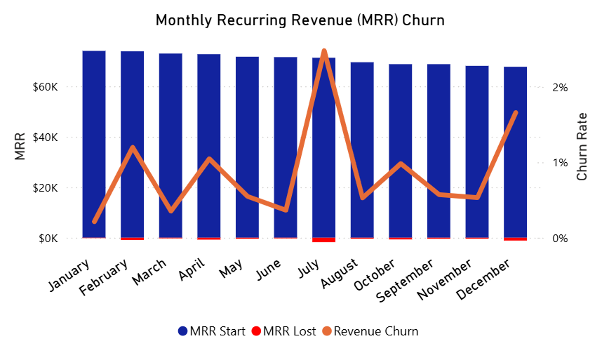

Revenue Churn Rate
Description
Revenue Churn Rate measures the percentage of recurring revenue lost due to subscription cancellations or downgrades within a given time period. Unlike customer churn, it reflects the financial impact of churned customers.
Visual Example

DAX Formula
SQL Example
Usage Notes
- Focuses on revenue lost, not customer count.
- Best used with MRR-style billing models.
- Use Net Revenue Churn if you also track expansion (upgrades).
- Ideal for SaaS or recurring-revenue businesses.